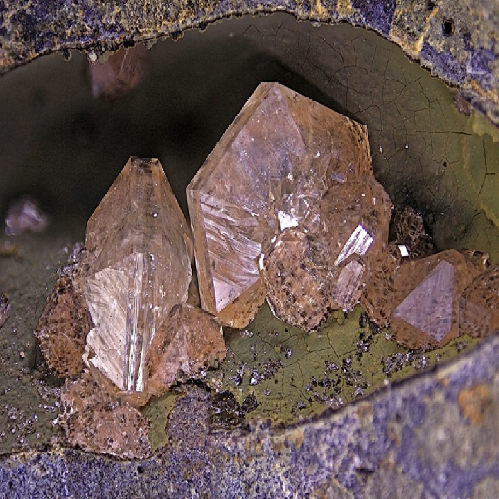

Zeolita

Zeolita
La zeolita es un mineral formado por un marco tridimensional de aluminosilicatos con iones de aluminio, silicio y oxígeno. Tiene la capacidad de absorber y filtrar contaminantes y gases tóxicos, por lo que es ampliamente utilizada en aplicaciones de purificación de agua y aire, así como en la industria petrolera y química. Además, la zeolita es conocida por su capacidad de intercambio de iones, lo que la hace útil en aplicaciones de ablandamiento de agua y como catalizador en procesos químicos. En su forma natural, la zeolita puede encontrarse en diferentes colores y formas, y puede ser utilizada en la fabricación de joyería y artesanías.